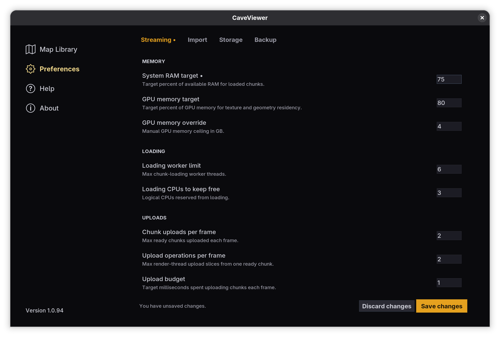
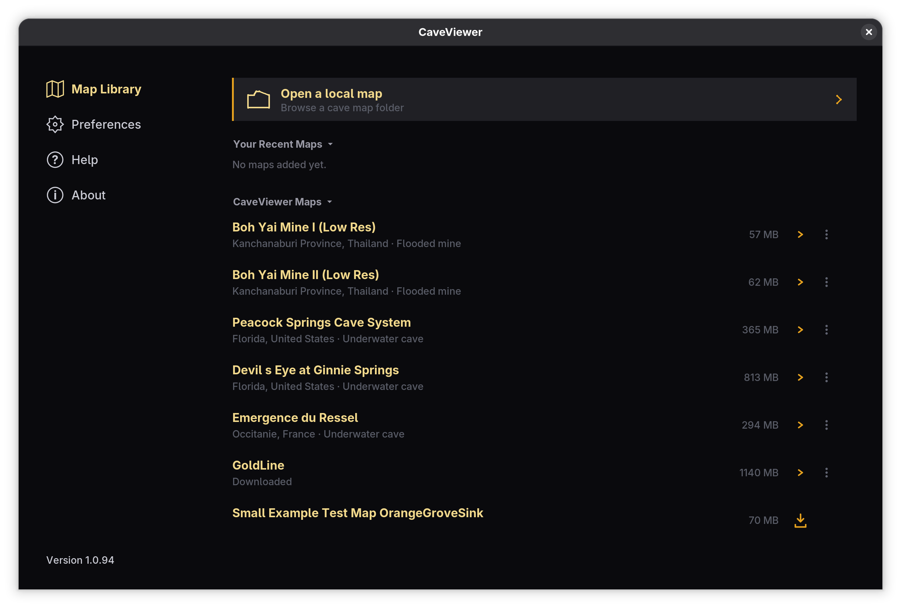
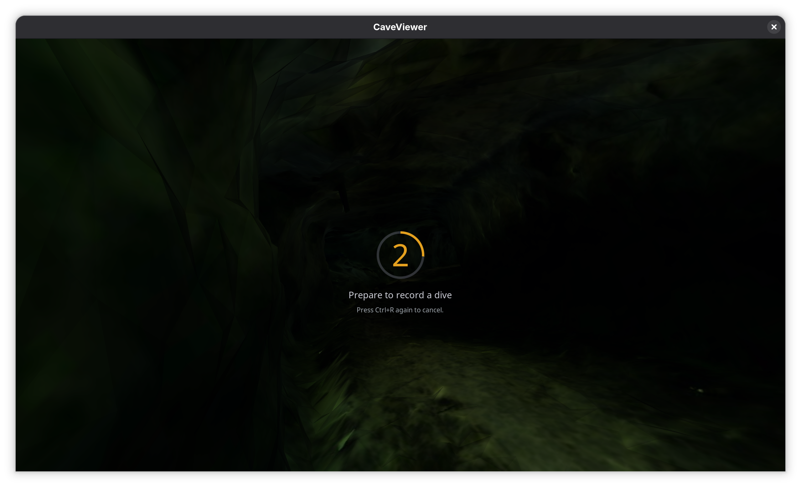

Why CaveViewer
View Ginormous Maps
Large cave maps can take a long time to open and become difficult to move through. That can force you to wait, work with a smaller copy, or lose context when checking a long route.
CaveViewer splits exceptionally large and complicated cave maps into smaller pieces, then brings nearby segments together as you explore. This lets consumer-grade hardware open maps that might otherwise exceed its available memory.
You can inspect a cave at its original scale, follow passages and restrictions without first cutting the map down, and return more quickly after the first import.
For hardware guidance and detailed performance controls, see the system requirements and tuning guide.

Keep Moving as Maps Load
CaveViewer loads and unloads nearby map sections as you move instead of placing the entire cave in memory at once. This keeps long routes practical while preserving the context around passages, restrictions, and landmarks.
Automatic system and graphics-memory budgets provide a useful starting point on a wide range of computers. When a particular map or machine needs adjustment, the Import Tuning and Streaming Tuning guides explain each control.

Enjoy Free Maps
Without a cave map of your own, it is difficult to judge whether a map viewer will work for you. Searching for data, downloading a large collection, and wondering whether a file will open can make a first visit frustrating.
Map Library gives you free maps to download and open right away. Use them to get familiar with CaveViewer, check that it works on your computer, or simply explore an unfamiliar cave.
Choose only the maps you want. Downloaded maps remain available when your internet connection is limited, so you do not have to download them again.

Record & Share Dives
After you close a map, it is easy to lose the details of a route through a cave. A written description rarely shows every turn, landmark, or restriction along the way.
Capture saves a video of your route and a record of the path you took. You can review them later, share them with someone else, or let another person follow the same route.
The video and route stay in local files, ready to use with the tools you already have. You can also mark two points to save a portable part of a cave when you need only one passage, landmark, or area to discuss.

Pay Nothing
CaveViewer and its standard maps are free. There are no accounts, subscriptions, ads, or trackers.
Your imported maps, recordings, and shared routes remain local files under your control, and downloaded maps remain available when your internet connection is limited.
The software is released under the GNU Affero General Public License v3.0 (AGPLv3).